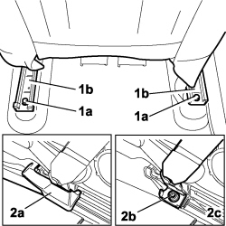
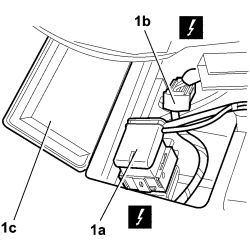
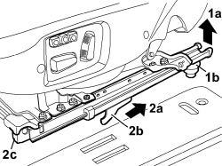
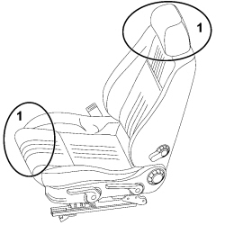

7045A10 FRONT SEAT (ONE), LEFT OR RIGHT - R.R.
- Path
- Procedures > 70 FITTINGS > 7045 FRONT SEATS > 7045A FRONT SEAT ASSEMBLY > 7045A10 FRONT SEAT (ONE), LEFT OR RIGHT - R.R.
- Kind
- repair procedure (removal / refitting; the operation number is the code)
- Applies to
- all engines; all production periods
- Interactive page
- https://sloeber94.github.io/elrnDB-fCrm/en/#/194001086
Applies to: all engines; all production periods
 Removing
Removing
 Refitting
Refitting
Applies to: all engines; all production periods
- Raise the seat completely and slide it forwards into the end of travel position.
- Turn the ignition key OFF. - Disconnect the negative and positive battery terminals.
- Disconnect the negative and positive battery terminals.
Description | Connector | |
|---|---|---|
BATTERY |
1. Undo the two bolts (1a) securing the seat guides (1b).

Applies to: all engines; all production periods
1. Undo the bolts (1a) fixing the seat side guard (1b) and remove the guard from the vehicle.

Applies to: all engines; all production periods

Applies to: all engines; all production periods
Refitting
Removing- Check that the seat assembly is not damaged.
- Place the seat in position in the vehicle.
- Fold the seat over forwards.
- Position the seat side guard and tighten the guard fixing bolts.
- Screw in the two bolts securing the seat guides and tighten to the recommended torque.
Component | Fastening | dia | Value (daNm) | Validity |
|---|---|---|---|---|
FRONT SEATS TO FRAME | Bolt | M10 | 3,6 ÷ 4,4 |
- Reconnect the negative and positive battery terminals.
- Reposition the seat.
Topics linked from this page (1)
Topics that link to this page (35)
- O002 FRONT SEAT BACKREST ANGLE ADJUSTMENT NOT WORKING
- S064 FRONT SEAT SLIDES SQUEAKING
- 2125C30 GEAR ENGAGEMENT/SELECTION CABLES - R.R
- 5010B47 SIDE AIR DUCT TO REAR SEATS (ONE), LH OR RH - R.R.
- 5505C41 PASSENGER COMPARTMENT WIRING - R.R
- 5580C44 FRONT SIDE BAG MODULE (ONE) LH OR RH - R.R
- 7040L17 PASSENGER COMPARTMENT FLOOR FRONT CARPET - R.R.
- 7040L18 PASSENGER COMPARTMENT FLOOR REAR CARPET - R.R.
- 7045A23 SUPPORT/GUIDE FOR FRONT SEAT, LEFT OR RIGHT - R.R.
- 7045A36 DRIVER'S SEAT MANUAL HEIGHT ADJUSTMENT DEVICE - R.R
- 7045A39 DEVICE FOR DRIVER'S SEAT BACKREST LUMBAR ADJUSTMENT - R.R.
- 7045A43 FRONT SEAT EXTERIOR GUARD (ONE), LEFT OR RIGHT - R.R
- 7045A44 FRONT SEAT INTERIOR GUARD (ONE), LEFT OR RIGHT - R.R
- 7045A49 OUTER GUARD OF FRONT SEAT ONE WITH ELECTRICAL MOVEMENT LH OR RH R R
- 7045A66 SLIDING GUIDE (ONE),LEFT OR RIGHT FOR FRONT SEAT - R.R.
- 7045A81 FRONT SEAT SLIDING CONTROL HOSE (ONE), LH OR RH - R R
- 7045A86 FRONT SEAT FRAME (ONE), LEFT OR RIGHT, R.R.
- 7045D10 TRIM FOR ONE FRONT SEAT LH OR RH - R.R
- 7045D18 FRONT SEAT CUSHION SPRINGING (ONE), LH OR RH - R R
- 7045D20 FRONT SEAT CUSHION COVER, LEFT OR RIGHT - R.R.
- 7045D21 FRONT SEAT CUSHION COVER, LEFT OR RIGHT - R.R. WITH SEAT REMOVED
- 7045D30 FRONT SEAT BACKREST COVER, LEFT OR RIGHT - R.R.
- 7045J11 REAR SEAT GUIDES CONNECTION BAR, (ONE) LH OR RH - R R
- 7045J30 FRONT SEAT LIFTING MOTOR, LEFT OR RIGHT - R.R. FOLLOWING ELECTRICAL WIRING CHECK
- 7045J33 FRONT SEAT SWINGING MOTOR, (ONE) LH OR RH - R R AFTER CHECKING THE ELECTRIC CIRCUIT
- 7045J34 FRONT SEAT BACKREST ANGLE MOTOR, LEFT OR RIGHT - R.R. FOLLOWING ELECTRICAL WIRING CHECK
- 7045J50 DRIVER'S SIDE FRONT SEAT POSITION MEMORISATION SYSTEM ECU - R+R FOLLOWING ELECTRICAL WIRING CHECK
- 7045J80 FRONT SEAT MOVEMENT SYSTEM WIRING BUNDLE - R R OR REPLACE
- 7045J81 FRONT SEAT CONNECTORS SUPPORT BRACKET (ONE), LH OR RH - R R WITH SEAT TAKEN OFF
- 7045M10 FRONT SEAT HEATING SYSTEM SWITCH, LEFT OR RIGHT - R+R
- 7045M22 HEATER PAD FOR FRONT SEAT CUSHION, LEFT OR RIGHT - R.R. FOLLOWING ELECTRICAL CIRCUIT CHECK
- 7045M26 L/H OR R/H FRONT SEAT SQUAB HEAT PAD - R+R FOLLOWING ELECTRICAL WIRING CHECK
- 7045M32 ELECTRONIC THERMOSTAT FOR HEATING CIRCUIT OF ONE FRONT SEAT, LH OR RH R R
- 7065A24 ANCHORAGE LINK WITH PRETENSIONER FOR ONE FRONT SEAT BELT LH OR RH R R
- 7065A34 PASSENGER PRESENCE SENSOR ON FRONT SEAT FOR INDICATING SEATBELT UNFASTENED R R